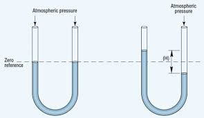

ေလထုဖိအားဆိုတာ ဘာလဲ ေျပာၾကည့္ရေအာင္။ ေလက မျမင္ရဘူး ေပါ့တယ္၊ အေလးခ်ိန္႐ွိတယ္လို႔မထင္ရဘူး။ မင္းတုိ႔ေတြလည္း ဟ.. ေလႀကီးက ငါတုိ႔အေပၚဖိထားတာ သိေတာင္မသိပါလားေပါ့။ အမွန္က ဖိအား႐ွိတယ္၊ ကိုယ္တုိ႔ကို ဖိထားတယ္။ ဘယ္ေလာက္ေတာင္ဖိထားသလဲဆိုရင္ ကိုယ္တုိ႔အေပၚသက္ေရာက္ေနတဲ့ ဖိအားက 200 kN ေလာက္႐ွိတယ္။ တန္ ၂၀ ေလာက္ေပါ့။ (ေလထုရဲ႕ဖိအားက တစ္မီတာပတ္လည္မွာ 100 kN ႐ွိတယ္) ဒီေလာက္မ်ားတဲ့ဖိအား ကိုယ္တုိ႔ေတြ ဘာလို႔မခံစားမိတာလည္းဆိုရင္.. (၁) ေမြးကတည္းက ၾကံဳလာရတဲ့ ဒီဝန္ကို ႐ွိလို႔႐ွိမွန္းကို မသိေတာ့ဘူး။ (ငါးေတြက ေရထုဖိအားကို မခံစားရသလိုေပါ့) ဒါက ဒႆ နဆန္ဆန္ ေျပာတာ။ (၂) သိပၸံနည္းက်ေျပာရရင္ ကိုယ္တုိ႔ရဲ႕ ခနၶာေဗဒအရ ေၾကာင့္ပဲ။(ဇီဝေဗဒဒီဖိုင္းေၾကာင့္ပဲ) တစ္နည္းေျပာရရင္ ဒီကမာၻေျမေပၚမွာ ေနႏိုင္ေအာင္ ဒီဇိုင္းလုပ္ထားလို႔ပဲ။ ဘယ္လိုဒီဇိုင္းလဲဆိုေ တာ့ ကိုယ္တုိ႔ရဲ႕ ေသြးမွာလည္းဖိအား႐ွိၿပီး အဲ့ဒီဖိအားက ေလထုဖိအားထက္ နည္းနည္းမ်ားတယ္။အဲ့ဒီေတာ့ ေလထုဖိအားကို ခုခံထားတယ္။ဒါေၾကာင့္ ဒီေလာက္မ်ားတဲ့ဖိအားကို ခံႏိုင္တာ။
စကားလက္တံ႐ွည္ရရင္ ဒီကမာၻေျမရဲ႕ေလထုဖိအားကို ခံႏိုင္ေအာင္ ဒီဇိုင္းလုပ္ထားတဲ့ ကိုယ္တုိ႔ရဲ႕ ခနၶာ ကိုယ္ႀကီးဟာ တျခားၿဂိဳလ္ေတြေပၚ (ကိုယ္တုိ႔ကမာၻရဲ႕ ေလထုဖိအားထက္ မ်ားတဲ့/နည္းတဲ့ ၿဂိဳလ္ေတြေပၚ) သြားေနလို႔မရဘူး။ တျခားၿဂိဳလ္ေတြေပၚမေျပာပါနဲ႔။ ဟိုး ေတာင္အျမင့္ႀကီးေတြရဲ႕ ထိပ္ကို ေရာက္သြားခဲ့ရင္ တစ္ခ်ိဳ႕ေတြ ႏွာေခါင္းေသြးလ်ံွတာ အဲဒါေၾကာင့္ပဲ။ ေတာင္ထိပ္မွာ ေလထုက ပါးလႊာသြားၿပီး ေလထုဖိအား ေလ်ာ့သြားတယ္။ က်သြားတယ္။ အဲ့ဒီမွာ ကိုယ္တုိ႔ရဲ႕ ေသြးဖိအား၊ ေလထုဖိအား ကြာဟခ်က္က ပိုႀကီးသြားၿပီးေတာ့ႏွာေခါင္းေသြးလ်ွံေတာ့တာပဲ။ သာမာန္လူေတြအတြက္ကေတာ့ ေပ-၅၀၀၀ ေက်ာ္သြားတာနဲ႔ ေလထုဖိအားနည္းလို႔ ျဖစ္လာတဲ့ နာက်င္ကိုက္ခဲတာကို ခံစားရတယ္။ mountain sickness လို႔ေခၚတာေပါ့။ ဒါဆို (ေလထုဖိအား က်သြားတာနဲ႔ ဒီလိုနာက်င္ဒုကၡေတြခံစားရရင္) ေလထုဖိအား တအားနည္းသြားရင္ ဘာျဖစ္ႏိုင္သြားမလဲလို႔ မေတြးမိဘူးလား။ ေတြးသင့္တယ္ေနာ္... ။
မင္းတုိ႔ အာကာသသိပၸံဇာတ္ကားေတြမွာ ၾကည့္ဖူးတယ္မလား။ အျဖဴေရာင္ အာကာသဝတ္စံုအႀကီးႀကီးကို ..။ အဲဒါ ဝတ္ခ်င္လို႔ ဝတ္ထားတာေတာ့မဟုတ္ဘူး။ အာကာသမွာ ေလထုဖိအားက Zero(0) ဆိုေတာ့ မင္းတုိ႔ရဲ႕ ေသြးေၾကာေတြ ေပါက္ထြက္ကုန္မွာစိုးလို႔ ဝတ္ထားရတာ။ အဲဒီဝတ္စံုက ကမာၻ့ေလထုဖိအားကို ဖန္တီးေပးထားရတာ။ ေနာက္တစ္ေၾကာင္းကေတာ့ ေရဆူမွတ္ေၾကာင့္ပဲ။ မင္းတုိ႔စိတ္ထဲမွာ ေရဆူမွတ္ဆိုတာ အပူခ်ိန္သက္သက္ပဲလို႔ ထင္မွာပဲ။ အမွန္က ဒီေကာင္ကလည္း ႏိႈင္းရပဲ။ ေလထုဖိအားနဲ႔ ဆက္စပ္ေနတယ္။ ဘာလို႔လဲဆိုေတာ့ ေရကေန ေရေငြ႔အျဖစ္ကို ေျပာင္းသြားတယ္ဆိုတာ (အဲ့ဒီေရေငြ႔ေလးေတြက) ေလထုဖိအားကိုကန္ၿပီးထြက္လာရတာ။ အဓိပၸါယ္က သူ အပူကေနရတဲ့ စြမ္းအင္က ေလထုဖိအားထက္ နည္းမယ္ဆို အဲဒီေရမဆူႏိုင္ဘူး။ ေလထုဖိအားကို လြန္ႏိုင္မွသာ ဆူႏိုင္မွာ။ ဖိအားမ်ားမယ္ဆို အပူစြမ္းအင္ပိလိုမယ္၊ေရဆူမွတ္ျမင့္မယ္။ ဖိအားနည္းမယ္ဆို အပူစြမ္းအင္နည္းနည္းေလးပဲ လိုမယ္။ ေရဆူမွတ္နိမ့္မယ္။ ဒါေၾကာင့္ ေရဆူမွတ္ဆိုတာ ႏိႈင္းရပဲ။ ဒီထက္႐ွင္းေအာင္ ေျပာရရင္ မင္း ဂန္လန္ရာဇီေတာင္ထိပ္မွာ ေရေႏြးအိုးသြားတည္၊ ေျမျပန္႔မွာထက္ ျမန္ျမန္ဆူမွာပဲ။ (ေရဆူမွတ္ 100 °C ဆိုတာ စံသတ္မွတ္ထားတဲ့ သာမာန္ေလထုဖိအား 76cmHg မွာ တိုင္းထားထာ) ျပန္ေကာက္ရရင္ အာကာသဝတ္စံုသာ ဝတ္မထားရင္ အပူခ်ိန္နည္းနည္းေလးရတာနဲ႔ မင္းတို႔ရဲ႕ေသြးေတြဟာ ပြတ္ပြတ္ဆူသြားမွာပဲ။
ေလထုဖိအားကို ေတာင္ထိပ္မွာ နည္းသြားတယ္လို႔ ေျပာခဲ့တယ္။ အဓိပၸါယ္က ကမာၻတစ္ခုလံုးမွာ ညီတူညာတူမ႐ွိဘူးေပါ့။ ေတာင္ထိပ္ေပၚမွာ နည္းမယ္၊ ေျမျပန္႔မွာ ပိုမယ္။ ဝင္႐ိုးစြန္းေတြမွာ အီေကြတာထက္စာရင္ နည္းမယ္။ ဆိုေတာ့ ေနရာေဒသ (locality) အရ ကြာျခားႏိုင္တာေပါ့။ (ျမင့္ေလ နည္းေလ) ၿပီးရင္ အခ်ိန္ကာလအရလည္း ကြာျခားႏုိင္တယ္။ ဥပမာ ၿမိဳ႕ကေတာ့ဒီၿမိဳ႕ပဲ.. ဒါေပမယ့္ ၿမိဳ႕ေလးေပၚသက္ေရာက္တဲ့ ေလထုဖိအားက ေႏြအခါနဲ႔ မိုးအခါ မတူဘူး။ မိုးအခါနဲ႔ ေဆာင္းအခါ မတူဘူး။ ေန႔အခါနဲ႔ ညအခါမတူဘူး။ ပူတဲ့ေလ(ပူတဲ့ရာသီဥတု)က ေအးတဲ့ေလ (ေအးတဲ့ရာသီဥတု)ထက္ ဖိအားပိုမ်ားတယ္။ စိုထိုင္းဆမ်ားတဲ့ေလက ေျခာက္ေသြ႔တဲ့ေလထက္ ဖိအားပိုမ်ားတယ္။ ဒီေတာ့ ေလထုဖိအားဆိုတာ locality and time အရ မတူဘူး။ ေျပာင္းတယ္၊ အဲ့လိုမွတ္ထား။ အဲ့လို မတူလို႔လည္း ေလစီးေၾကာင္းေတြ၊မုန္တိုင္းေတြကို ျဖစ္ေစတယ္။ မိုးေတြကို ရြာေစတယ္။ ေျပာရရင္ ကမာၻ့ရာသီဥတုကို ဖန္တီးတဲ့ လက္သည္းႀကီးေပါ့။ မင္းတုိ႔ မိုးေလဝသေၾကညာရင္ ေျမပံုကို ၾကည့္ၾကည့္ ..ကြန္တိုမ် ဥ္းလို မ် ဥ္းေတြကို ေတြ႔ရလိမ့္မယ္။ အဲ့ဒါ ေလဖိအားကို ျပတဲ့ မ် ဥ္းေတြ .. မိုးေလဝသကို ခန္႔မွန္းရာမွာ အေရးႀကီးဆံုး indicator ႀကီးေပါ့။ ၾကားဖူးတယ္မဟုတ္လား .. ေလဖိအားနည္းရပ္ဝန္းသည္ .. တစ္ေျဖးေျဖးအားေကာင္းလာ၍ အားအသင့္အတင့္႐ွိေသာ မုန္တုိင္းတစ္ခုျဖစ္လာပါသည္တုိ႔ဘာတုိ႔။ လက္ေတြ႔ပတ္ဝန္းက်င္မွာကို ေလထုဖိအားကို အသံုးခ်ေနတာမင္းတုိ႔ သတိမထားမိလို႔.. ။ မင္းတုိ႔ အေအးပုလင္းကို ပိုက္နဲ႔ စုပ္ေသာက္တယ္။ sucking လုပ္တယ္ေပါ့။ အဲဒါ ေလထုဖိအားကို အသံုးခ်တာပဲ။ မင္းတုိ႔စိတ္ထဲမွာေတာ့ ငါတု႔ိက ေရကိုစုပ္ယူလိုက္တယ္လို႔ပဲ ထင္မွာ။မဟုတ္ဘူး။ အမွန္က မင္းတုိ႔က ပိုက္ထဲက ေလကိုစုပ္ယူလိုက္တာ။ အတိအက်ေျပာရရင္ေတာ့ ပိုက္နဲ႔ ပါးစပ္ထဲမွာ ႐ွိတဲ့ ေလရဲ႕သိပ္သည္းဆနည္းသြားေအာင္လုပ္တာ။ အျပင္ေလထုဖိအားထက္ အမ်ားႀကီးနည္းသြားတယ္ေပါ့။ ပိုက္ေဘးကေရကို ဖိထားတဲ့ ေလဖိအားက မ်ားေတာ့ အဲ့ဒီဖိအားေၾကာင့္ပဲ အရည္ေတြ အေပၚကို တက္သြားတာ။ ကေလးေဆာ့တဲ့ ေရႁပြန္တို႔၊ ဆရာဝန္ကိုင္တဲ့ ေဆးထိုးႁပြန္ (syringe) တို႔ အားလံုးဟာ ဒီသေဘာပဲ။
ေလထုဖိအားဟာ တစ္ေနရာနဲ႔ တစ္ေနရာ၊ တစ္ခ်ိန္နဲ႔ တစ္ခ်ိန္ မတူေပမယ့္လို႔ စံထားရမယ့္ ပ်မ္းမ်ွေလထုဖိအားတစ္ခုေတာ့ လိုတာေပါ့။ normal atmospheric pressure လို႔ေခၚတယ္။ အဲ့ဒီေကာင္ကို ဘယ္ကရသလဲဆိုရင္ ပင္လယ္မွာ တိုင္းထားတာ၊ ထပ္ခါထပ္ခါတိုင္းၿပီး ပ်မ္းမ်ွတန္ဖိုးယူထားတာ။ (ပင္လယ္ sea level ဆိုတာ အနိမ့္ဆံုးလို သတ္မွတ္ထားတာကိုး) အဲဒီ normal atmospheric pressure (P atm) ရဲ႕ တန္ဖိုးက 76cmHg (760 mmHg)႐ွိတယ္။ အဲဒီမွာ ထပ္ၿပီးေျပာဖို႔ လိုလာတာက ဘာနဲ႔တိုင္းတာလဲ၊ဖိအားဆိုၿပီးေတာ့ သူရဲ႕ယူနစ္က အားနဲ႔ ဆိုင္တဲ့ newton(N)တို႔ pound(lb) တို႔ မဟုတ္ဘဲ ဘာလို႔ cmHg/mmHg ျဖစ္ေနတာလဲ။ အဲဒါကို မ႐ွင္းခင္ ၾကားျဖတ္ၿပီး တစ္ခုေလာက္ေမးခ်င္တယ္။ မင္းတို႔အရပ္ထဲမွာ ၾကားဖူးတယ္မလား။ ေသြးေပါင္ခ်ိန္တာေလ.. ေသြးတိုးေနတာ အေပၚေသြး ၁၄၀ ေလာက္႐ွိတယ္တုိ႔၊ေသြးက်ေနတာေလ။ ၁၀၀ ေတာင္မျပည့္ခ်င္ဘူးတုိ႔.. အဲ့ဒါ ေသြးဖိအားကိုေျပာေနတာ။ အတိအက်ဆို 140mmHg, 100mmHg လို႔ေျပာေနတာ။ အထက္မွာ ေျပာခဲ့ပါတယ္။ ေသြးဖိအားက ေလထုဖိအားထက္ ပိုတယ္ဆိုတာ ..ေမးၿပီး သာမာန္ေလထုဖိအားက 760 mmHg ၊ ေသြးဖိအားက 100 mmHg, 140mmHg ဆိုေတာ့... why... ျဖစ္ႏုိင္ပါ့မလား။... စိတ္ဝင္စားရင္ ေတြးၾကည့္ၾကည့္ေပါ့..😂
ယူနစ္အေၾကာင္း မရွင္းခင္ေလထုဖိအားကို ဘယ္လိုတိုင္းလဲဆိုတာ အရင္ေျပာရမယ္။ေလထုဖိအားကိုတိုင္းတဲ့ ကိရိယာက္ု barometerလို႔ေခၚတယ္၊လုပ္အားပံုက ရွင္းတယ္။တစ္ဖက္ပြင့္ႁပြန္ကို မာက်ဴရီျဖည့္ထားတဲ့ ခြက္ထဲမွာ စိုက္ထားမယ္။အဲ့ဒီႁပြန္ရဲ႕ တစ္ဖက္ကိုေလဟာနယ္ျဖစ္ေအာင္ လုပ္ထားမယ္။ဆိုေတာ့ေဘးကေလေတြက ဖိလိုက္တာနဲ႔မာက်ဴရီအရည္ေတြက ႁပြန္ထဲကိုတက္သြားတာေပါ့။ ( ေလဟာနယ္ဆိုေတာ့ အတားအဆီး အခုအခံမရွိဖူး) ဘယ္ေလာက္တက္သြားလဲဆိုေတာ့ သူမိသေလာက္တက္သြားမွာပဲ။ တစ္ပိႆာအားနဲ႔ဖိလိုက္ရင္ တက္သြားမယ့္ မာက်ဴရီရဲ႕ အေလးခ်ိန္ကလည္း တစ္ပိႆာပဲ။မပုိဖူး...မေလ်ာ့ဖူး...။ ဆိုေတာ့တက္သြားတဲ့မာ က်ဴရီရဲ႕အေလးခ်ိန္က ေလထုဖိအားပဲေပါ့။ လြယ္ေအာင္လို႔အေလးခ်ိန္ အေနနဲ႔မေျပာပဲ သူဘယ္ေလာက္တက္သြားသလဲဆိုတာကိုပဲ ေလထုဖိအားအေနနဲ႔ေျပာၾကတယ္။သာမာန္အေျခအေနမွာ အဲ့ဒီမာက်ဴရီဟာ 76cmHg တက္သြားလို႔ normal atmospheric pressure (P atm)ကို cmHgလို႔သတ္မွတ္ေခၚဆိုၾကတာ။ဆိုေတာ့ ဒီဂဏန္းဟာ အသံုးျပဳဖို႔လြယ္ေအာင္သံုးတဲ့၊သတ္မွတ္ဖန္တီးထားတဲ့ကိန္းဂဏန္းပဲ၊အၫႊန္းတစ္ခုပဲ၊အစစ္အမွန္ကိန္းဂဏန္းမဟုတ္ဖူး။သိပၸံစမ္းသပ္မႈေတြမွာ ဒီကဏန္းကို သံုးလို႔မရဖူး( နႈိင္းရအၫႊန္းအေနနဲ႔ေတာ့သံုးလို႔ရတယ္၊သံုးတယ္) ေလထုဖိအားရဲ႕တကယ့္ကဏန္းအစစ္အမွန္က အဲ့ဒီတက္သြားတဲ့မာက်ဴရီရဲ႕အေလးခ်ိန္ပဲ။တိတိတက်က်ေျပာရရင္ တက္သြားတဲ့မာက်ဴရီရဲ႕ေပါ့။76cmရွိတဲ့မာက်ဴရီရဲ႕ဖိအားက101300 N/m2 ရွိတယ္။ အဓိပၸာယ္က 1m2ပတ္လည္မွာသတ္ေရာက္တဲ့ေလထုဖိအားက101300 Nm2ရွိတယ္လို႔ေျပာတာ။ဖိအား pressure Pဆိုတာ forceကို Areaနဲ႔စားထားတာ P=F/A။ဒါေၾကာင့္ SI unitက Newton per meter square (Nm -2)။ဒါေပမယ့္ ပုစာၦတြက္ေတြမွာေတာ့ newton per meter square အစား Paလို႔သံုးတယ္။

ဘာရိုမီတာရဲ႕ အေျခခံသေဘာတရားကို သံုးပီးထြင္ထားတဲ့ အရည္ေတြ အေငြ႕ေတြရဲ႕ ဖိအားကိုတုိင္းတဲ့ကိရိယာတစ္ခုလည္း ရွိေသးတယ္။
မန္ႏိုမီတာ(manometer)လို႔ ေခၚတယ္။နာမည္ကြဲေတြေတာ့ အမ်ားႀကီးရွိတယ္။ဒါေပမဲ့ သာမန္ manometer က U-shapedပံုစံရွိတဲ့
၂-ဖက္ပြင့္ျပန္အေကာက္ေလး။(မ်ားေသာအားျဖင့္ ဓာတ္ေငြ႕ရဲ႕ဖိအားေတြကို တိုင္းတဲ့ေနရာမွာ သံုးတယ္)အဲဒီထဲမွာ ေပါ့တဲ့ အရည္တစ္ခုခုကို
ထည့္ထားမယ္။မာက်ဴရီကိုလည္း သံုးလို႔ရတယ္။ တစ္ဖက္ကို တိုင္းခ်င္တဲ့ဓာ်္ေငြ႕ကန္နဲ႔ ဆက္၊ ေနာက္တစ္ဖက္ကေတာ့ ဒီအတိုင္းပဲ ေလထဲမွာ
ထားထား။ဓာတ္ေငြ႕ရဲ႕ဖိအားေၾကာင့္ manometer ထဲမွာရွိတဲ့ အရည္ဟာ ေလထုဖိအားကို လြန္ၿပီးတက္သြားလိမ့္မယ္။အဲ့ဒီတက္သြားတဲ့
အရည္ရဲ႕အျမင့္(အရည္ရဲ႕ေလးခ်ိန္)က ဓာတ္ေငြ႕ရဲ႕ဖိအားပဲ။ တိတိက်က်ေျပာရရင္ ေလထုဖိအားကို လြန္ပီးတက္ရတာဆိုေတာ့ ဓာတ္ေငြ႕ဖိအားက ေလထုဖိအား +
တက္သြားတဲ့အျမင့္ပဲ။
ဥပမာ။ manometer ထဲမွာ မာက်ဴရီထည့္ထားတယ္၊ ဓာတ္ေငြ႕ကို တိုင္းတဲ့အခ်ိန္မွာ အဲဒီမာက်ဴရီlevelက 20mm
တက္သြားမယ္။ဒါဆို အဲဒီဓာတ္ေငြျရဲ႕ဖိအားက (ေလထုဖိအား + တက္သြားတဲ့အရည္ဖိအား) 760mm + 20mm = 780mmပဲ။780mmHgပဲ။အဲ့
ဓာတ္ေငြ႕ရဲ႕ဖိအားက ေလထုဖိအားထပ္နည္းရင္ အရည္က တက္မလာဖူး ၊ က်သြားလိမ့္မယ္။ဥပမာ 700mmHgပဲ ရွိတယ္။တစ္ဖက္က ေလထုက
760mmHg ရွိတယ္။ဒါဆို မာက်ဴရီ level က 60mm နိမ့္သြားမွာပဲ။ဆိုေတာ့ level ကနိမ့္သြားရင္ ေလထုဖိအားထဲက ႏႈတ္ရမယ္ေပါ့။
(ပုစၧာတြက္ေတာ့ မရွိဘူး၊ ဒီေလာက္နားလည္ရင္ ရၿပီ)